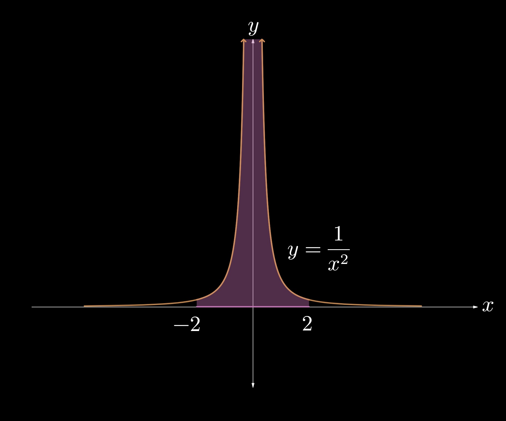

5.9 — Applications of Applications of Integrals
In this section we will discuss the Disk Method, which goes hand-in-hand with the Washer Method and the Shell Method. Solids of Revolution are often difficult because of its novelty and abstract nature to students. Let's introduce the idea by supposing that we have a region under a function \(f\).
Now let's suppose that we rotate this region about the \(x\)-axis and want to find the volume of the solid created. How should we do that? First let's consider breaking up the area into small rectangles(similar to Riemann Sums). The width for one of these rectangles is \(\Delta x\), and the height is \(f(x)\).

Let's focus on one of these rectangles and rotate it about the \(x\)-axis.


The solid formed is a cylinder with radius \(f(x)\) and depth \(\Delta x\), so its volume is given by \( \pi f(x)^2 \Delta x\).
Just like we did with Riemann Sums, we will make \(\Delta x\) infinitely small and sum up the infinitely-small solids, which have a width of \(dx\). These solids resemble disks, which is why this section is called the Disk Method!


To add up all of these infinitely-small disks, we integrate the volume formula from \(a\) to \(b\) but replace the width \(\Delta x\) with the differential \(dx\).
The volume of the solid created by rotating about the \(x\)- axis is therefore given by $$\int_a^b \pi f(x)^2 \, dx. $$
Notice that the distance from our function to the pole about which we rotate the function is the radius for our vertical disks. To generalize it I like to rewrite the formula as:
Note that the disk method can only be used if there is no gap between the region and the pole.
Example 1
Find the volume of the solid generated by rotating the function \(y = x^2\) about the \(x\)-axis from \(x = 1\) to \(x = 5\).
To visualize this problem let's draw a sketch.


Here we see that the radius for our disks is the distance between our function \(y = x^2\) and the \(x\)-axis. In this case \(r(x) = x^2 \), and the volume for one disk is therefore given by \(\pi (x^2)^2 \Delta x\).
To sum up all of the disks from \(x = 1\) to \(x = 5\), we make \(\Delta x\) infinitely small and integrate the result: $$ \int_1^5 \pi (x^2)^2 \, dx$$ $$ = \pi \int_1^5 (x^4) \, dx$$ $$ = \pi (\frac{x^5}{5})\Big|_{1}^{5}$$ $$ = 1962.867 $$
In most cases you don't have to compute the integral by hand. Often times teachers allow you to use a calculator to evaluate the integral or only ask for the integral setup.
Example 2
Let P represent the region bounded by the function \(f(x) = x + 2\), the \(y\)-axis, and the line \(y = 6\). Find the volume of the solid generated when P is rotated about the \(y\)-axis.
As always we'll be drawing a sketch.


Because we're rotating about the \(y\)-axis, we need to express everything in terms of \(y\). We can start by writing \(f(x)\) to be in terms of \(y\) by solving for \(x\). $$ y = x + 2 \Rightarrow x = y - 2 = r(y) $$
Our bounds will also be in terms of \(y\). Note that the region P starts at \(y = 2\) and ends at \(y = 6\). Thus, our integral setup is: $$ \int_2^6 \pi (r(y))^2 \, dy $$ $$ = \pi \int_2^6 (y-2)^2 \, dy $$ $$ = \pi (\frac{y^2}{2} - 2y)\Big|_2^6 $$ $$ = 67.021 $$
Example 3
Let R represent the region bounded by the \(x\)-axis, the \(y\)-axis, the function \(y = e^{-2x}\), and the line \(x = 1\). Find the volume of the solid formed when R is rotated about the \(y\)-axis.
Once again let's draw a sketch of the problem.


In this case we're rotating about the \(y\)-axis, so we need everything in terms of \(y\). We should rewrite the function to be in terms of \(y\) by solving for \(x\):
$$ y = e^{-2x} \Rightarrow x = -\frac{1}{2}\ln{y} $$Now we need the boundries for our integral. We're summing up all the disks that make up the region R. Because the \(y\)-axis is bounding the region, \(y = 1\) is our upper bound. Notice that \(x = 1\) when \(y = 0.135\). This means that when \(0.135 \lt y \leq 1\), the region R is bounded by the function \(x = -\frac{1}{2}\ln{y}\). But when \(0 \lt y \leq 0.135\), the region is bounded by the line \(x = 1\). We can write \(r(y)\) as a piecewise function and construct two integrals:
$$ r(y)= \begin{cases} 1 & \text{for $0 \lt y \leq 0.135$} \\[2ex] -\frac{1}{2} \ln{y} & \text{for $0.135 \lt y \leq 1$} \end{cases} $$ $$ \pi \int_{0}^{1} r(y)^2 \, dy = \pi \Big[ \int_{0}^{0.135} 1^2 \, dy + \int_{0.135}^{1} (-\frac{1}{2} \ln{y})^2 \, dy\Big] $$ $$ = 0.933 $$Let's end the section with some a quick summary:
I. The Disk Method is used when there is NO space between a region and the axis about which it is rotated. The formula for the solid is given by $$\int_{x=a}^{x=b} \pi r(x)^2 \, dx $$ or $$ \int_{y=a}^{y=b} \pi r(y)^2 \, dy $$
II. The function \(r(x)\) or \(r(y)\) is the distance from the function to the axis. Remember to square it!
III. If you get a negative answer, then sorry :( — you did the problem wrong!